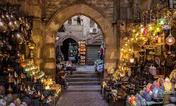
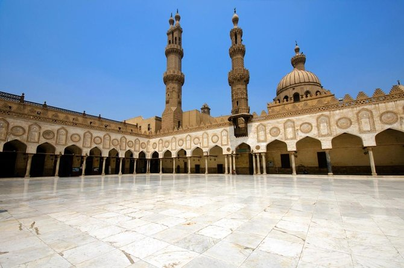

L'Égypte, berceau de l'ancienne civilisation pharaonique, est une destination envoûtante où le passé et le présent se mêlent dans une symphonie envoûtante. Ce pays fascinant regorge de trésors historiques, allant des majestueuses pyramides de Gizeh et du mystérieux Sphinx aux temples imposants de Karnak et de Louxor, témoins de l'ingéniosité et de la grandeur de l'Égypte ancienne. Mais l'Égypte ne se limite pas à son glorieux passé; ses villes animées comme Le Caire, avec son mélange effervescent de marchés animés, de mosquées historiques et de cafés traditionnels, offrent une immersion dans la vie quotidienne du pays. Les eaux du Nil, le plus long fleuve du monde, serpentent à travers des paysages époustouflants, bordés de temples millénaires et de villages pittoresques, offrant une perspective unique sur la vie égyptienne. Les stations balnéaires de la mer Rouge, telles que Hurghada et Sharm el-Sheikh, attirent également les visiteurs avec leurs plages de sable blanc, leurs récifs coralliens colorés et leurs activités nautiques palpitantes. Que ce soit pour explorer les mystères des pyramides, naviguer sur le Nil à bord d'un felouque, ou se détendre sur les plages paradisiaques, l'Égypte offre une expérience inoubliable, imprégnée de mystère, de beauté et d'hospitalité chaleureuse.
Lieux populaires à visiter à Caire
Caire est connue pour ses attractions culturelles. Voici quelques-uns des lieux les plus populaires à visiter :
- Pyramides de Gizeh : Les pyramides de Gizeh, icônes emblématiques de l'Égypte ancienne, se dressent majestueusement sur le plateau de Gizeh, à quelques kilomètres du Caire. Ces monuments imposants, construits il y a plus de 4 500 ans, sont un témoignage impressionnant de l'ingéniosité et de la puissance des anciens Égyptiens. Les visiteurs peuvent explorer les trois grandes pyramides, y compris la grande pyramide de Khéops, ainsi que le Sphinx mystique, symbole énigmatique de la civilisation égyptienne.
- Musée égyptien du Caire : Le musée égyptien du Caire abrite l'une des plus grandes collections d'artefacts de l'Égypte antique au monde. Avec plus de 120 000 pièces exposées, dont les trésors de la tombe de Toutânkhamon, le musée offre une immersion fascinante dans l'histoire et la culture de l'Égypte ancienne. Les visiteurs peuvent admirer des sarcophages, des statues, des bijoux et bien d'autres artefacts extraordinaires, qui racontent l'histoire glorieuse de cette civilisation millénaire.
- Khan El Khalili : Le bazar animé de Khan El Khalili est le cœur vibrant du vieux Caire, où les visiteurs peuvent se perdre dans un labyrinthe de ruelles étroites bordées de boutiques colorées et de stands animés. Ce marché historique, fondé au XIVe siècle, est un lieu idéal pour découvrir l'artisanat local, acheter des souvenirs uniques et déguster des spécialités égyptiennes dans les cafés traditionnels.
- Mosquée Al-Azhar : Fondée au Xe siècle, la mosquée Al-Azhar est l'une des plus anciennes et des plus prestigieuses institutions d'enseignement islamique au monde. Cette magnifique mosquée, avec son architecture islamique élégante et ses cours paisibles, est un lieu de culte important et un symbole de la vie spirituelle et intellectuelle du Caire. Les visiteurs peuvent admirer ses minarets élancés, ses dômes ornés et son magnifique intérieur décoré de carreaux de faïence colorés.
- Citadelle de Saladin : Perchée sur une colline surplombant le Caire, la citadelle de Saladin est une forteresse emblématique qui offre une vue panoramique imprenable sur la ville. Construite au XIIe siècle pour protéger la ville des croisés, elle abrite plusieurs sites historiques, dont la mosquée de Muhammad Ali, célèbre pour son architecture ottomane et ses dômes imposants.



